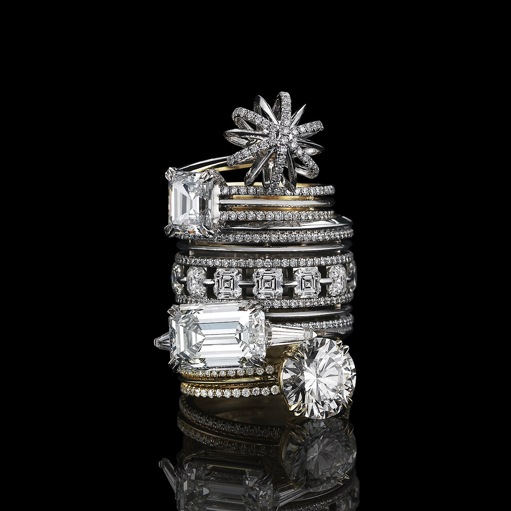

The Science of Haute Blouse Tailoring
Deep technical monographs examining fabric rheology, fiber polymer structures, and kinetic anatomical drape authored by the master cutters and textile scientists at 181 Mercer Street.
The Geometry of the Bias Cut: 45-Degree Grain Alignment
An empirical investigation into shear stress re-orientation, trellis lattice elongation, and gravity hanging protocols in silk blouses.

Haute Couture Seam Finishing: True French Seams vs Overlock
Analyzing tensile failure thresholds, raw edge fraying, and cutaneous friction in encased French seaming across sheer silk chiffons.

Understanding Silk Momme Weights: Density & Tensile Strength
A metrological evaluation of momme density curves from 12mm to 22mm, examining tear resistance and light opacity in silk crepe de chine.
Pinctada Mother-of-Pearl & Hand-Wrapped Thread Shanks
The structural mechanics of nacre aragonite crystal lattices, torque resistance, and 2mm elevated thread shanks in blouse closure systems.
Pleat Memory & Steam Thermoforming in Silk Organza
Thermal glass transition phases of natural sericin protein matrices, mould compression kinetics, and crease durability under ambient humidity.
Architecture of the Tailored Cuff: Wrist Biomechanics
Kinematic analysis of radial-ulnar deviation, mitred placket overlap geometry, and interfacing stiffness in bespoke blouse sleeves.